Istio调用链埋点原理剖析—是否真的“零修改”分享实录（下）
接上文Istio调用链埋点原理剖析—是否真的“零修改”分享实录（上）
Isito调用链**
调用链原理和场景
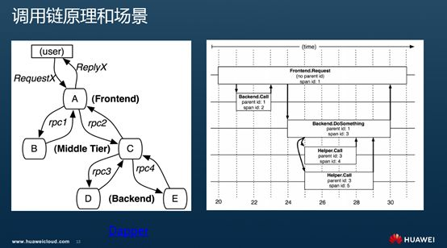
正如Service Mesh的诞生是为了解决大规模分布式服务访问的治理问题，调用链的出现也是为了对应于大规模的复杂的分布式系统运行中碰到的故障定位定界问题。大量的服务调用、跨进程、跨服务器，可能还会跨多个物理机房。无论是服务自身问题还是网络环境的问题导致调用上链路上出现问题都比较复杂，如何定位就比单进程的一个服务打印一个异常栈来找出某个方法要困难的多。需要有一个类似的调用链路的跟踪，经一次请求的逻辑规矩完整的表达出来，可以观察到每个阶段的调用关系，并能看到每个阶段的耗时和调用详细情况。Dapper, a Large-Scale Distributed Systems Tracing Infrastructure 描述了其中的原理和一般性的机制。模型中包含的术语也很多，理解最主要的两个即可：
- Trace：一次完整的分布式调用跟踪链路。
- Span：跨服务的一次调用； 多个Span组合成一次Trace追踪记录。
上图是Dapper论文中的经典图示，左表示一个分布式调用关系。前端（A），两个中间层（B和C），以及两个后端（D和E）。用户发起一个请求时，先到达前端，再发送两个服务B和C。B直接应答，C服务调用后端D和E交互之后给A应答，A进而返回最终应答。要使用调用链跟踪，就是给每次调用添加TraceId、SpanId这样的跟踪标识和时间戳。
右表示对应Span的管理关系。每个节点是一个Span，表示一个调用。至少包含Span的名、父SpanId和SpanId。节点间的连线下表示Span和父Span的关系。所有的Span属于一个跟踪，共用一个TraceId。从图上可以看到对前端A的调用Span的两个子Span分别是对B和C调用的Span，D和E两个后端服务调用的Span则都是C的子Span。
调用链系统有很多实现，用的比较多的如zipkin，还有已经加入CNCF基金会并且的用的越来越多的Jaeger，满足Opentracing语义标准的就有这么多。
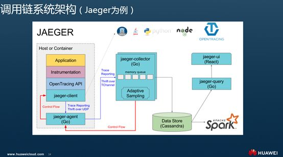
一个完整的调用链跟踪系统，包括调用链埋点，调用链数据收集，调用链数据存储和处理，调用链数据检索（除了提供检索的APIServer，一般还要包含一个非常酷炫的调用链前端）等若干重要组件。上图是Jaeger的一个完整实现。这里我们仅关注与应用相关的内容，即调用链埋点的部分，看下在Istio中是否能做到”无侵入“的调用链埋点。当然在最后也会看下Istio机制下提供的不同的调用链数据收集方式。
Istio标准BookInfo例子
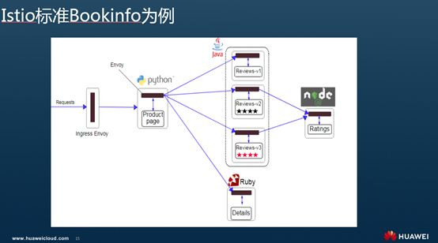
简单期间，我们以Istio最经典的Bookinfo为例来说明。Bookinfo模拟在线书店的一个分类，显示一本书的信息。本身是一个异构应用，几个服务分别由不同的语言编写的。各个服务的模拟作用和调用关系是：
- productpage ：productpage 服务会调用 details 和 reviews 两个服务，用来生成页面。
- details ：这个微服务包含了书籍的信息。
- reviews ：这个微服务包含了书籍相关的评论。并调用 ratings 微服务。
- ratings ：ratings 微服务中包含了由书籍评价组成的评级信息。
调用链输出
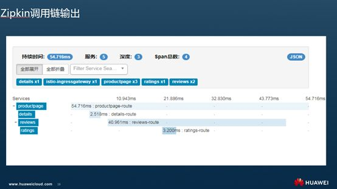
在Istio上运行这个典型例子，不用做任何的代码修改，自带的Zipkin上就能看到如下的调用链输出。可以看到展示给我们的调用链和Boookinfo这个场景设计的调用关系一致：productpage 服务会调用 details 和 reviews 两个服务，reviews调用了ratings 微服务。除了显示调用关系外，还显示了每个中间调用的耗时和调用详情。基于这个视图，服务的运维人员比较直观的定界到慢的或者有问题的服务，并钻取当时的调用细节，进而定位到问题。
我们就要关注下调用链埋点到底是在哪里做的，怎么做的？
在Istio中，所有的治理逻辑的执行体都是和业务容器一起部署的Envoy这个Sidecar，不管是负载均衡、熔断、流量路由还是安全、可观察性的数据生成都是在Envoy上。Sidecar拦截了所有的流入和流出业务程序的流量，根据收到的规则执行执行各种动作。实际使用中一般是基于K8S提供的InitContainer机制，用于在Pod中执行一些初始化任务. InitContainer中执行了一段iptables的脚本。正是通过这些Iptables规则拦截pod中流量，并发送到Envoy上。Envoy拦截到Inbound和Outbound的流量会分别作不同操作，执行上面配置的操作，另外再把请求往下发，对于Outbound就是根据服务发现找到对应的目标服务后端上；对于Inbound流量则直接发到本地的服务实例上。
我们今天的重点是看下拦截到流量后Sidecar在调用链埋点怎么做的。
Istio调用链埋点逻辑
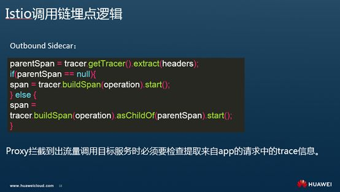
Envoy的埋点规则和在其他服务调用方和被调用方的对应埋点逻辑没有太大差别。
- Inbound流量：对于经过Sidecar流入应用程序的流量，如果经过Sidecar时Header中没有任何跟踪相关的信息，则会在创建一个根Span，TraceId就是这个SpanId，然后再将请求传递给业务容器的服务；如果请求中包含Trace相关的信息，则Sidecar从中提取Trace的上下文信息并发给应用程序。
- Outbound流量：对于经过Sidecar流出的流量，如果经过Sidecar时Header中没有任何跟踪相关的信息，则会创建根Span，并将该跟Span相关上下文信息放在请求头中传递给下一个调用的服务；当存在Trace信息时，Sidecar从Header中提取Span相关信息，并基于这个Span创建子Span，并将新的Span信息加在请求头中传递。
特别是Outbound部分的调用链埋点逻辑，通过一段伪代码描述如图：
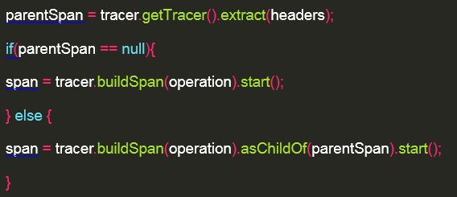
调用链详细解析
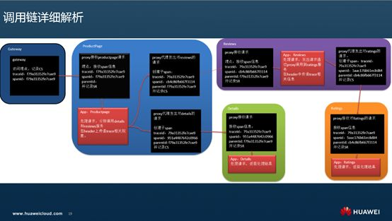
如图是对前面Zipkin上输出的一个Trace一个透视图，观察下每个调用的细节。可以看到每个阶段四个服务与部署在它旁边上的Sidecar是怎么配合的。在图上只标记了Sidecar生成的Span主要信息。因为Sidecar 处理 Inbound和Outbound的逻辑有所不同，在图上表也分开两个框图分开表达。如productpage，接收外部请求是一个处理，给details发出请求是一个处理，给reviews发出请求是另外一个处理，因此围绕productpage这个app有三个黑色的处理块，其实是一个Sidecar在做事。
同时，为了不使的图上箭头太多，最终的Response都没有表达出来，其实图上每个请求的箭头都有一个反方向的Response。在服务发起方的Sidecar会收到Response时，会记录一个CR(client Received)表示收到响应的时间并计算整个Span的持续时间。
**下面通过解析下具体数据来找出埋点逻辑： **
- 首先从调用入口的Gateway开始，Gateway作为一个独立部署在一个pod中的Envoy进程，当有请求过来时，它会将请求转给入口服务productpage。Gateway这个Envoy在发出请求时里面没有Trace信息，会生成一个根Span：SpanId和TraceId都是f79a31352fe7cae9，因为是第一个调用链上的第一个Span，也就是一般说的根Span，所有ParentId为空，在这个时候会记录CS（Client Send）；
- 请求从入口Gateway这个Envoy进入productpage的app业务进程其Inbound流量被productpage Pod内的Envoy拦截，Envoy处理请求头中带着Trace信息，记录SR(Server Received)，并将请求发送给productpage业务容器处理，productpage在处理请求的业务方法中在接受调用的参数时，除了接受一般的业务参数外，同时解析请求中的调用链Header信息，并把Header中的Trace信息传递给了调用的Details和Reviews的微服务。
- 从productpage出去的请求到达reviews服务前，其Oubtbound流量又一次通过同Pod的Envoy，Envoy埋点逻辑检查Header中包含了Trace相关信息，在将请求发出前会做客户端的调用链埋点，即以当前Span为parent Span，生成一个子Span：新的SpanId cb4c86fb667f3114，TraceId保持一致9a31352fe7cae9，ParentId就是上个Span的Id： f79a31352fe7cae9。
- 从prodcutepage到review的请求经过productpage的Sidecar走LB后，发给一个review的实例。请求在到达Review业务容器前，同样也被Review的Envoy拦截，Envoy检查从Header中解析出Trace信息存在，则发送Trace信息给reviews。reviews处理请求的服务端代码中同样接收和解析出这些包含Trace的Header信息，发送给下一个Ratings服务。
在这里我们只是理了一遍请求从入口Gateway，访问productpage服务，再访问reviews服务的流程。可以看到期间每个访问阶段，对服务的Inbound和Outbound流量都会被Envoy拦截并执行对应的调用链埋点逻辑。图示的Reviews访问Ratings和productpage访问Details逻辑与以上类似，这里不做复述。
以上过程也印证了前面我们提出的Envoy的埋点逻辑。可以看到过程中除了Envoy再处理Inbound和Outbound流量时要执行对应的埋点逻辑外。每一步的调用要串起来，应用程序其实做了些事情。就是在将请求发给下一个服务时，需要将调用链相关的信息同样传下去，尽管这些Trace和Span的标识并不是它生成的。这样在出流量的proxy向下一跳服务发起请求前才能判断并生成子Span并和原Span进行关联，进而形成一个完整的调用链。否则，如果在应用容器未处理Header中的Trace，则Sidecar在处理请求时会创建根Span，最终会形成若干个割裂的Span，并不能被关联到一个Trace上，就会出现我们开始提到的问题。
不断被问到两个问题来试图说明这个业务代码配合修改来实现调用链逻辑可能不必要：**问题一、**既然传入的请求上已经带了这些Header信息了，直接往下一直传不就好了吗？Sidecar请求APP的时候带着这些Header，APP请求Sidecar时也带着这些Header不就完了吗？**问题二、**既然TraceId和SpanId是Sidecar生成的，为什么要再费劲让App收到请求的时候解析下，发出请求时候再带着发出来传回给Sidecar呢？
回答问题一，只需理解一点，这里的App业务代码是处理请求不是转发请求，即图上左边的Request to Productpage 到prodcutpage中请求就截止了，要怎么处理完全是productpage的服务接口的内容了，可以是调用本地处理逻辑直接返回，也可以是如示例中的场景构造新的请求调用其他的服务。右边的Request from productpage 完全是服务构造的发出的另外一个请求；**回答问题二，**需要理解当前Envoy是独立的Listener来处理Inbound和Outbound的请求。Inbound只会处理入的流量并将流量转发到本地的服务实例上。而Outbound就是根据服务发现找到对应的目标服务后端上。除了实在一个进程里外两个之间可以说没有任何关系。 另外如问题一描述，因为到Outbound已经是一个新构造的请求了，使得想维护一个map来记录这些Trace信息这种方案也变得不可行。
这样基于一个例子来打开看一个调用链的主要过程就介绍到这里。附加productpage访问reviews的Span详细，删减掉一些数据只保留主要信息大致是这样：
"traceId": "f79a31352fe7cae9",
"id": "f79a31352fe7cae9",
"name": "productpage-route",
"timestamp": 1536132571838202,
"duration": 77474,
"annotations": [
{
"timestamp": 1536132571838202,
"value": "cs",
"endpoint": {
"serviceName": "istio-ingressgateway",
"ipv4": "172.16.0.28"
}
},
{
"timestamp": 1536132571839226,
"value": "sr",
"endpoint": {
"serviceName": "productpage",
"ipv4": "172.16.0.33"
}
},
{
"timestamp": 1536132571914652,
"value": "ss",
"endpoint": {
"serviceName": "productpage",
"ipv4": "172.16.0.33"
}
},
{
"timestamp": 1536132571915676,
"value": "cr",
"endpoint": {
"serviceName": "istio-ingressgateway",
"ipv4": "172.16.0.28"
}
}
]
Productpage的Proxy上报了个CS，CR, reviews的那个proxy上报了个SS，SR。分别表示Productpage作为client什么时候发出请求，什么时候最终收到请求，reviews的proxy什么时候收到了客户端的请求，什么时候发出了response。另外还包括这次访问的其他信息如Response Code、Response Size等。
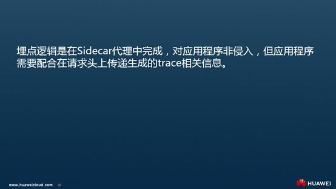
根据前面的分析我们可以得到结论：埋点逻辑是在Sidecar代理中完成，应用程序不用处理复杂的埋点逻辑，但应用程序需要配合在请求头上传递生成的Trace相关信息。
服务代码修改示例
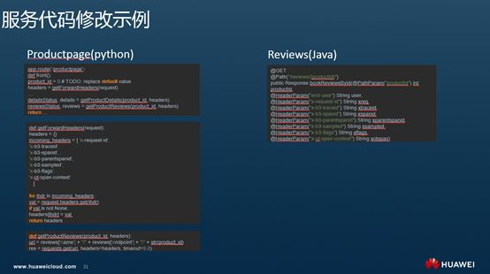
前面通过一个典型例子详细解析了Istio的调用链埋点过程中Envoy作为Sidecar和应用程序的配合关系。分析的结论是调用链埋点由Envoy来执行，但是业务程序要有适当修改。下面抽取服务代码来印证下。Python写的 productpage在服务端处理请求时，先从Request中提取接收到的Header。然后再构造请求调用details获取服务接口，并将Header转发出去。
首先处理productpage请问的rest方法中从Request中提取Trace相关的Header。
app.route('/productpage')
def front():
product_id = 0 # TODO: replace default value
headers = getForwardHeaders(request)
…
detailsStatus, details = getProductDetails(product_id, headers)
reviewsStatus, reviews = getProductReviews(product_id, headers)
return …
可以看到就是提取几个trace相关的header kv
def getForwardHeaders(request):
headers = {}
incoming_headers = [ 'x-request-id',
'x-b3-traceid',
'x-b3-spanid',
'x-b3-parentspanid',
'x-b3-sampled',
'x-b3-flags',
'x-ot-span-context'
]
for ihdr in incoming_headers:
val = request.headers.get(ihdr)
if val is not None:
headers[ihdr] = val
return headers
然后重新构造一个请求发出去，请求reviews服务接口。可以看到请求中包含收到的Header。
def getProductReviews(product_id, headers):
url = reviews['name'] + "/" + reviews['endpoint'] + "/" + str(product_id)
res = requests.get(url, headers=headers, timeout=3.0)
reviews服务中Java的Rest代码类似，在服务端接收请求时，除了接收Request中的业务参数外，还要提取Header信息，调用Ratings服务时再传递下去。其他的productpage调用details，reviews调用ratings逻辑类似。
@GET
@Path("/reviews/{productId}")
public Response bookReviewsById(@PathParam("productId") int productId,
@HeaderParam("end-user") String user,
@HeaderParam("x-request-id") String xreq,
@HeaderParam("x-b3-traceid") String xtraceid,
@HeaderParam("x-b3-spanid") String xspanid,
@HeaderParam("x-b3-parentspanid") String xparentspanid,
@HeaderParam("x-b3-sampled") String xsampled,
@HeaderParam("x-b3-flags") String xflags,
@HeaderParam("x-ot-span-context") String xotspan)
当然这里只是个demo，示意下要在那个位置修改代码。实际项目中我们不会这样在每个业务方法上作这样的修改，这样对代码的侵入，甚至说污染太严重。根据语言的特点会尽力把这段逻辑提取成一段通用逻辑。
Istio调用链数据收集：by Envoy
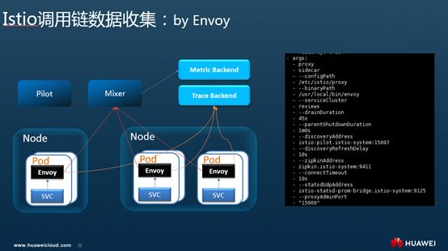
一个完整的埋点过程，除了inject、extract这种处理Span信息，创建Span外，还要将Span report到一个调用链的服务端，进行存储并支持检索。在Isito中这些都是在Envoy这个Sidecar中处理，业务程序不用关心。在proxy自动注入到业务pod时，会自动刷这个后端地址.即Envoy会连接zipkin的服务端上报调用链数据，这些业务容器完全不用关心。当然这个调 用链收集的后端地址配置成jaeger也是ok的，因为Jaeger在接收数据是兼容zipkin格式的。
Istio调用链数据收集：by Mixer
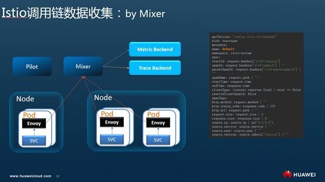
除了直接从Envoy上报调用链到zipkin后端外，Istio提供了Mixer这个统一的面板来对接不同的后端来收集遥测数据，当然Trace数据也可以采用同样的方式。
即如TraceSpan中描述，创建一个TraceSpan的模板，来描述从mixer的一次访问中提取哪些数据，可以看到Trace相关的几个ID从请求的Header中提取。除了基础数据外，基于Mixer和kubernetes的继承能力，有些对象的元数据，如Pod上的相关信息Mixr可以补充，背后其实是Mixer连了kubeapiserver获取对应的pod资源，从而较之直接从Envoy上收集的原始数据，可以有更多的业务上的扩张，如namespace、cluster等信息APM数据要用到，但是Envoy本身不会生成，通过这种方式就可以从Kubernetes中自动补充完整，非常方便。
这也是Istio的核心组件Mixer在可观察性上的一个优秀实践。
Istio官方说明更新
最近一直在和社区沟通，督促在更显著的位置明确的告诉使用者用Istio作治理并不是所有场景下都不需要修改代码，比如调用链，虽然用户不用业务代码埋点，但还是需要修改些代码。尤其是避免首页“without any change”对大家的误导。得到回应是1.1中社区首页what-is-istio已经修改了这部分说明，不再是1.0中说without any changes in service code，而是改为with few or no code changes in service code。提示大家在使用Isito进行调用链埋点时，应用程序需要进行适当的修改。当然了解了其中原理，做起来也不会太麻烦。
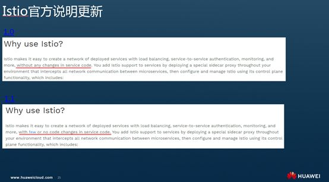
改了个程度轻一点的否定词，很少几乎不用修改，还是基本不用改的意思。这也是社区一贯的观点。结合对Istio调用链的原理的分析和一个典型例子中细节字段、流程包括代码的额解析，再加上和社区沟通的观点。得到以下结论：
- Istio的绝大多数治理能力都是在Sidecar而非应用程序中实现，因此是非侵入的；
- Istio的调用链埋点逻辑也是在Sidecar代理中完成，对应用程序非侵入，但应用程序需做适当的修改，即配合在请求头上传递生成的Trace相关信息。
华为云Istio服务网格公测中
改了个程度轻一点的否定词，很少几乎不用修改，还是基本不用改的意思。这也是社区一贯的观点。结合对Istio调用链的原理的分析和一个典型例子中细节字段、流程包括代码的额解析，再加上和社区沟通的观点。得到以下结论：
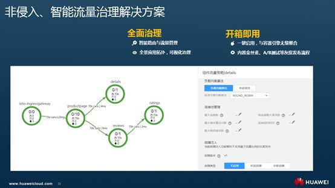
在腾讯的场子上只讲干货的技术，尽量少做广告。在这里只是用一页PPT来简单介绍下华为云当前正在公测的Istio服务网格服务。
华为云容器引擎CCE的深度集成，一键启用后，即可享受Istio服务网格的全部治理能力；基于应用运行的全景视图配置管理熔断、故障注入、负载均衡等多种智能流量治理功能；内置金丝雀、A/B Testing典型灰度发布流程灰度版本一键部署，流量切换一键生效；配置式基于流量比例、请求内容灰度策略配置，一站式健康、性能、流量监控，实现灰度发布过程量化、智能化、可视化；集成华为云APM，使用调用链、应用拓扑等多种手段对应用运行进行透视、诊断和管理。
华为云Istio社区贡献
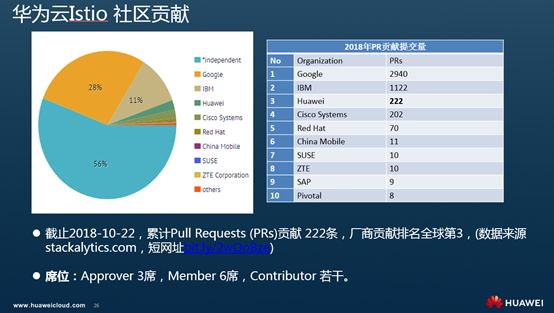
华为作为CNCF 基金会的初创会员、白金会员，CNCF / Kubernetes TOC 成员。在Kubernetes社区贡献国内第一，全球第三，全球贡献3000+ PR，先后贡献了集群联邦、高级调度策略、IPVS负载均衡，容器存储快照等重要项目。随着Istio项目的深入产品化，团队也积极投入到Istio的社区贡献。当前社区贡献国内第一，全球第三。Approver 3席，Member 6席，Contributor 若干。
-
通过Pilot agent转发实现HTTP协议的健康检查： 针对mTLS enabled环境，传统的kubernetes http健康检查不能工作，实现 sidecar转发功能，以及injector的自动注入。
-
Istioctl debug功能增强：针对istioctl缺失查询sidecar中endpoint的能力，增加proxy-config endpoint、proxy-status endpoint命令，提高debug效率。
-
HTTPRetry API增强： 增加HTTPRetry 配置项RetryOn策略，可以通过此控制sidecar重试。
-
MCP 配置实现： Pilot支持mesh configuration, 可以与galley等多个实现了MCP协议的server端交互获取配置。以此解耦后端注册中心。
-
Pilot CPU异常问题解决：1.0.0-snapshot.0 pilot free 状态CPU 利用率超过20%，降低到1%以下。
-
Pilot 服务数据下发优化：缓存service，避免每次push时进行重复的转换。
-
Pilot服务实例查询优化：根据label selector查询endpoints（涵盖95%以上的场景），避免遍历所有namespace的endpoints。
-
Pilot 数据Push性能优化：将原有的串行顺序推送配置，更新为并行push，降低配置下发时延。
今天分享的只是一个点上的部分内容，Istio和容器技术更多技术分享欢迎大家关注“容器魔方”，容器前沿技术与最佳行业实践的公众号，并可申请加入一个超过2000人的容器技术交流群组，参与容器相关技术的讨论。
谢谢大家。感谢K8S技术社区提供的这次很棒的活动。感谢腾讯的小伙伴提供的非常棒的场地和现场服务。